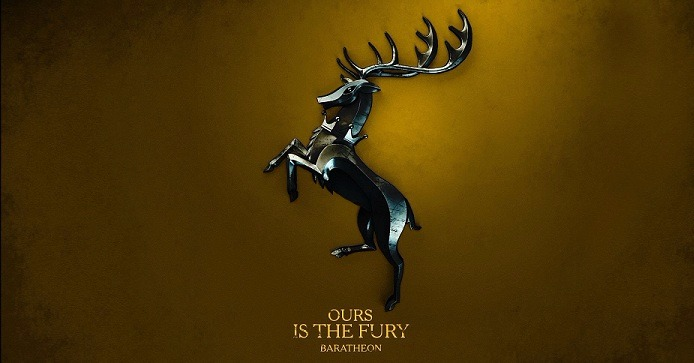

Os Baratheons
{kind=link}
A Casa Baratheon de Ponta Tempestade, é uma das Grande Casas de Westeros e é a principal casa das Terras da Tempestade. Sua sede é em Ponta Tempestade, um castelo antigo construído pelos Reis da Tempestade. Seu brasão é um veado coroado negro num fundo dourado. Os membros da família tendem a ser grandes, com cabelo preto e olhos azuis. Eles são conhecidos por seus temperamentos vivos. Seu lema é Nossa é a Fúria.
História
Baratheon é a mais nova das casas principais originais, tendo sua descendência desde Orys Baratheon, um dos generais mais importantes de Aegon I, e rumores diziam que fosse seu irmão bastardo. Pela linha feminina, os Baratheon descendem dos Reis da Tempestade, pois Orys matou Argilac Durrandon, o Arrogante, o último dos Reis da Tempestade, e casou com sua filha Argella. Orys adotou o símbolo e o lema da linha ancenstral de sua esposa. A linhagem dos Reis da Tempestade data de antes da Era dos Heróis quando seu reino foi fundado pelo Rei Durran Desgosto-Divino, um herói lendário. Durante a Rebelião Blackfyre, os Baratheon permaneceram leis à dinastia Targaryen, proporcionando grande parte da força comandada pelo Príncipe Baelor Quebra Lanças na decisiva Batalha do Campo do Capim Vermelho. Princesa Rhaelle Targaryen, filha de Aegon V, casou-se com um Baratheon e assim nasceu Lorde Steffon Baratheon, continuando os laços estreitos entre o dragão e o veado. A rebelião que usurpou os Targaryen do Trono de Ferro, no entanto, foi iniciada em nome do filho de Steffon, Lorde Robert Baratheon e seu irmão de criação, Eddard Stark. Os Baratheon e seus vassalos foram fundamentais para o conflito, junto com Casas Arryn, Stark e Tully, e, eventualmente, a Casa Lannister. A Batalha de Solarestival e o Cerco de Ponta Tempestade foram os principais eventos nas Terras da Tempestade. Após a guerra, a Casa gerou dois ramos menores: um sentado no Trono de Ferro sob o Rei Robert, e outro na Ilha de Pedra do Dragão encabeçada por Lorde Stannis. Durante a Rebelião Greyjoy contra o governo de Robert, a frota combinada dos Baratheon derrotou a Frota de Ferro, na Batalha de Ilha Bela, comandada pelo Mestre dos Navios, Stannis. Ele depois subjugou Grande Wyk, em nome de seu irmão, supostamente comandando exércitos dos senhores da tempestade para fazê-lo. Com Robert e Stannis segurando seus próprios títulos, o jovem Renly Baratheon se tornou Senhor de Ponta Tempestade. Algum tempo depois de ele conseguir a maioridade, ele foi nomeado para pequeno conselho de Robert como Mestre das Leis. Como Robert I estava morrendo de um ataque de javali, Renly pediu Eddard Stark, a Mão do Rei, para apoiá-lo em uma complô para ocupar o trono após a morte do rei. Lorde Stark se recusou, mesmo dizendo que se as crianças de Cersei eram bastardas nascidas do incesto. Eddard achava que o trono deveria passar para Stannis quando Robert falecesse. Renly se irrita e fuge de Porto Real. Apesar da melhor pretensão de Stannis, Renly foi capaz de reunir as Terras da Tempestade para a sua causa, bem como a Casa Tyrell, logo no início da Guerra dos Cinco Reis. Quando o Rei Renly foi morto sob os muros de Ponta Tempestade, a maioria das casas juramentadas a Ponta Tempestade foram primeiro até Stannis, em seguida. Os Tyrells da Campina, contudo, se bandearam para o lado do Trono de Ferro. Após a Batalha da Água Negra, a maioria dos senhores da Tempestade desertam Stannis também. Após a morte de Joffrey I, o atual chefe da casa é o Rei no Trono de Ferro, Tommen I - título disputado com o Rei Stannis. Após a queda de Pedra do Dragão, a guarnição atual em Ponta Tempestade é a última força no sul de Stannis. Stannis parte com 1 500 soldados (tudo que lhe restou) para o Norte. Ele auxilia a Patrulha da Noite a derrotar os selvagens na Muralha e depois inicia sua marcha para Winterfell.